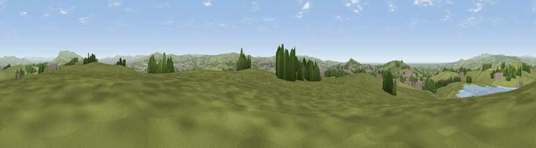

Height House Hill
#8494 in England · top 15% of its area beats it · near WilpshireThe view, rendered

A 360° render of this exact spot computed from the terrain model, tree cover and land cover — summer colours, afternoon light, calibrated against photographs of famous viewpoints. Real trees, hedges and buildings will differ in detail.
The panorama
Grey silhouette: terrain skyline in each direction (720 bearings, Earth curvature and refraction included). Dashed green: skyline with trees (+15 m) and buildings (+8 m) as obstacles. Blue strip: how far the ground is visible on each bearing.
Where the view opens
Wedge length = distance to the farthest visible ground on that bearing (vegetation-aware). Rings at 10, 25 and 50 km.
What fills the view
73% grassland · 13% woodland · 10% built-up · 3% water
Angular shares of the visible panorama (visual magnitude), not map area. Landscape diversity 0.37 (0–1 Shannon).
Key numbers
More beautiful places nearby
The staircase of upgrades: each row has a higher view potential than everything closer. Driving times are estimates from straight-line distance, calibrated against real road routing — check an actual route before setting out.
| Place | Direction | Drive | Score |
|---|---|---|---|
| Viewpoint near Wilpshire | NNW · 1 km | ~3 min | 66.7 |
| Viewpoint near Salesbury | W · 3 km | ~7 min | 67.1 |
| Viewpoint near Blackburn | SW · 4 km | ~8 min | 69.9 |
| Viewpoint near Mellor | W · 5 km | ~10 min | 71.8 |
| Viewpoint near Pleasington | SW · 6 km | ~12 min | 74.8 |
| Darwen Hill | SSW · 10 km | ~19 min | 80.7 |
| Rivington Pike | SSW · 19 km | ~32 min | 81.9 |
| White Brow | SSW · 20 km | ~33 min | 82.9 |
53.77786, -2.45027 · source: dobih hill · position refined by local search. Computed location — check access rights before visiting.